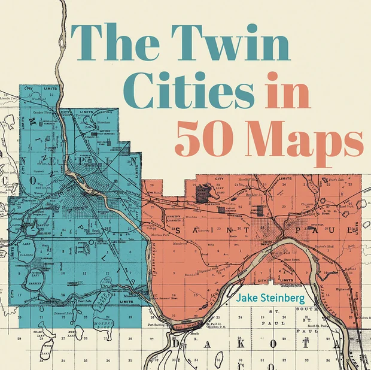

Howdy!
I’m a Minneapolis-based cartographer and data journalist on the graphics team at the Minnesota Star Tribune, the author of The Twin Cities in 50 Maps and an editor for the Atlas of Design.
What I do
Transform data into visual stories that illuminate and inspire. I make thoughtfully designed maps and data visualizations for the news, the web, the bookshelf and the trailhead.
Off the clock
You can find me rock climbing, exploring the world by bike and running rivers in my canoe, usually with my American dingo, Juneau. I occasionally take on freelance commissions.

The Twin Cities in 50 Maps
Stories of glaciers and gangsters; epic floods and titans of industry; Native people and immigrants from every corner of the globe. The maps in this book bridge the past and present and even offer glimpses at the future. Whether you’ve lived in the Twin Cities your whole life or only just arrived, it will show you a new way to see your home.
Preorder the bookSelected work
-
Operation Metro Surge
2026 · News, Interactive, Scrollytelling
Provided authoritative visual journalism on the unprecedented and rapidly unfolding immigration operation that ultimately left two U.S. citizens dead and ignited a protest movement watched by the world.
★ Winner, Breaking News, Large Newsroom, from the Online News Association’s Online Journalism Awards 2026. Finalist for the Knight Award for Public Service.
- Breaking down the videos: A close examination of the shooting of Renee Good
- How 3,000 federal agents would compare to 10 largest Twin Cities police forces
- A chaotic confrontation, a gun and 10 shots: A frame-by-frame analysis of the fatal shooting of Alex Pretti
- Is ICE really leaving Minnesota? The data is complicated.
-
Lindsey Vonn’s Mountains
2026 · News, 3D, Outdoors
A biography of Lindsey Vonn published in the run-up to the 2026 Winter Olympics, told by the mountains that made her.
-
A Restless River
2026 · Print
A 2-page spread in my book that exposes the writhing and rambling of the Minnesota River.
-
The Cathedral of Saint Paul
2026 · Print
A divinely inspired GIS viewshed analysis that appears in my book.
-
Wildfire coverage
2026 · News, Scrollytelling, Climate
Mapping the causes and consequences of Minnesota’s worst wildfire season in a generation.
-
Star Tribune basemap styles
2025–2026 · News, Interactive, Outdoors
Designed a full suite of MapLibre basemap styles for use across the Star Tribune’s editorial coverage verticals.
-
Rincon Mountains
2024 · Print, 3D, Outdoors
A golden hour rendering of Saguaro National Park’s Rincon Mountains made to commemorate a trip with an old friend.
-
Cycling St. Paul’s Hills
2026 · Print
A 2-page spread in my book that visually compares the hills that await cyclists who wish to traverse the capitol city.
-
Slivers of an Ancient Forest
2021 · Print, Illustrated, Outdoors
The Northwoods are as fundamental to the cultural identity of the Upper Midwest as lakes and mosquitos. I made this National Geographic-inspired poster map for GEOG 370: Intro to Cartography. It tells the story of what the Northwoods used to be, as well as what they might one day become.
★ CaGIS Arthur Robinson Award for best print map, 2022
★ Featured in the NACIS Atlas of Design, Vol. VI
★ Winner in Research, NACIS Student Map & Poster Competition, 2022
★ Barbara Petchenik Award, best graduate student map, UW–Madison, 2022
-
Immigration in the Twin Cities
2026 · Print
Dot density maps that create a mosaic of immigrant communities in the Twin Cities at two points in history.
-
Work for the Wall Street Journal
2023 · News, Scrollytelling
I designed 42 maps on deadline in collaboration with reporters and editors around the world, covering events such as the war in Ukraine, the Maui wildfires, and the Titan submersible.
-
22, A Map
2022 · Interactive, Scrollytelling
A Mapbox-inspired journey through the aesthetic universe of Bon Iver’s 22, A Million.
-
Emily Ford’s Iditarod
2025 · News, Outdoors
A map that conjures the icy Alaska faced by Minnesotan Emily Ford during the 2025 Iditarod dog sled race. Built from a MODIS image.
-
The Legacy Tree
2024 · News, Climate
A quest through time in a warming wilderness to find the oldest living tree in Minnesota.
-
Minnesota State Fair Smellscape
2025 · Print, Illustrated
The landscape of smells — or, smellscape — of the Minnesota State Fair, where the aroma of roasting corn is as prominent as any mountain.
-
Where is Uptown?
2025 · News, Interactive, Print
A crowdsourced community geography story about Minneapolis’s most argued-over district. Or, neighborhood? Maybe vibe?
★ Awards of Excellence in Infographics; Line of Coverage; and Use of Multimedia and Design Elements, Society for News Design, 2026. It contributed to a portfolio Bronze Medal for my excellent editor, C.J. Sinner.
-
Election results
2023–2026 · News, Print, Interactive
Mapping the results of local, state and national elections for the Star Tribune.
-
Driftless Area
2023 · Print, 3D
Stylized land cover and elevation data for a sweeping wall map of the Driftless Area.
-
What the Interstates Destroyed
2026 · Print
Two deeply researched maps that document the neighborhoods that were demolished to build highways through the Twin Cities.
-
Illustrated stories
2026 · News, Illustrated, Outdoors
Hand-drawn cartography for the Star Tribune.
-
Urban foxes and coyotes
2026 · News, Scrollytelling, Print
Stories about backyard foxes and coyotes eking out a life in the margins of the metro.
-
Outdoor tales told in the Star Tribune
2023–2026 · News, Scrollytelling, Outdoors
Stories about the people and places of the North.
-
Twin Cities geology
2026 · Print
A 2-page spread in my book that tells the story of the subterranean world beneath the Twin Cities.
-
Urban paddling guide
2025 · Print, Outdoors
A guide to 13 of the best paddling routes in the Twin Cities. I scouted and authored guides to most of the routes, and mapped them all.
★ Silver Medal for Story Page Design, Society for News Design, 2026. Primary page design by Anna Boone.
-
East River flood study
2022 · Print, Climate
I designed a series of 9 maps for The Nature Conservancy and Wisconsin Sea Grant to communicate about flood risk in the Green Bay area.
-
The Life and Death of the Great Lakes Pipeline
2023 · Scrollytelling, Climate
Taking place in the all-too-near future, this piece of speculative fiction I made for Rob Roth’s Graphic Design in Cartography course tells the story of a pipeline that exports water from the Great Lakes to an increasingly thirsty world.
★ Best student map, Wisconsin Land Information Association, 2023
-
Where we live and where we work
2026 · Print
A 2-page spread in my book that explores the geography of employment and residency across the Twin Cities.
-
15-minute neighborhoods
2026 · Print
An analysis of where in the Twin Cities you can live comfortably without a car.
-
Cost of the commute
2026 · News, Scrollytelling
A visual story about how high gas prices caused by the war with Iran are squeezing commuters.
-
How does 2024’s weather compare with your childhood’s?
2025 · News, Interactive, Climate
An interactive story that puts data behind the feeling that 2024’s weather wasn’t like you remember it being when you were growing up.
★ Best Infographic/Data Visualization, Minnesota Society of Professional Journalists, 2026. Shared with Bryan Brussee and Mark Boswell.
-
Snowfall Tracker
2023–2026 · News, Interactive, Climate
A seasonal data viz dashboard that tracks and compares annual snowfall accumulation.
-
Projection trading card
2022 · Print
A retro video game design I contributed to Daniel Huffman’s Projection Collection.
-
Best places to hike
2024–2026 · Interactive, Outdoors
A seasonal feature for the Star Tribune spotlighting the best places to be outside.
-
Cloud Peak Wilderness
2024 · Print, 3D, Outdoors
A gift given to friends I shared a great trip with.